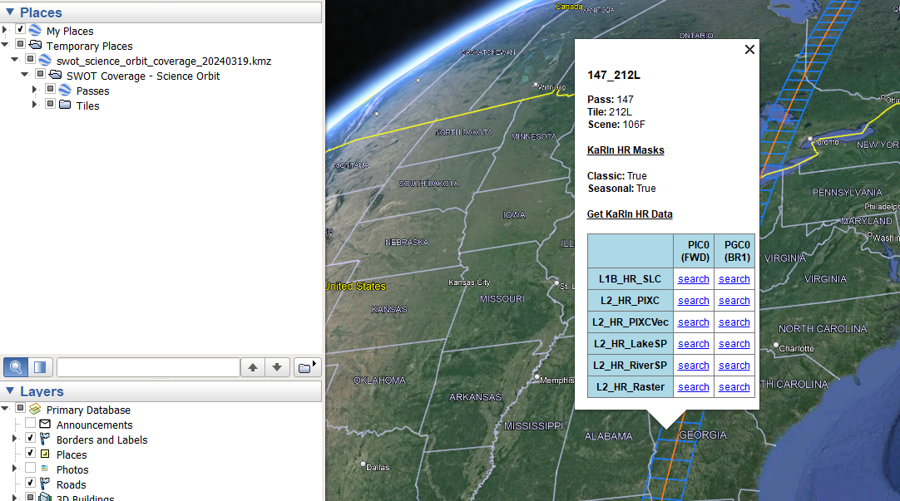

SWOT
SWOT Data Tutorials
SWOT Background
The Surface Water and Ocean Topography (SWOT) mission aims to provide valuable data and information about the world’s oceans and its terrestrial surface water such as lakes, rivers, and wetlands. SWOT is jointly developed by NASA and Centre National D’Etudes Spatiales (CNES), with contributions from the Canadian Space Agency (CSA) and United Kingdom Space Agency (UKSA). The satellite launched on December 16, 2022. PO.DAAC is the NASA archive for the SWOT mission, and has made data available via the NASA Earthdata Cloud (hosted in AWS) with direct download capabilities available. PO.DAAC hosts a variety of SWOT data products, whose product description documents can be found in the chart listing each dataset. More information can be found on PO.DAAC’s SWOT webpage and the SWOT Data User Handbook. Refer to this Mission Events page for relevant information about spacecraft events that impact data quality and availability. To give feedback or ask questions on data products, post in this Earthdata Forum topic.
SWOT Data Resources & Tutorials
Search & Download
Via Graphical User Interface:
- Find/download SWOT data on Earthdata Search
Programmatically: ie. within Python code workflows
Via Command Line - PO.DAAC subscriber/downloader examples:
Hydrology: These examples will download either the river vector files or the raster files for February 2024:
podaac-data-downloader -c SWOT_L2_HR_RiverSP_2.0 -d ./SWOT_L2_HR_RiverSP_2.0/ --start-date 2024-02-01T00:00:00Z --end-date 2024-02-29T23:59:59ZThis only downloads 1 hours worth of data for the globe:
podaac-data-downloader -c SWOT_L2_HR_Raster_2.0 -d ./SWOT_L2_HR_Raster_2.0/ --start-date 2024-02-01T00:00:00Z --end-date 2024-02-29T00:59:59ZOceanography: These examples will download modeled sea surface heights for the whole SSH collection and then the anomalies using the subscriber then downloader and finally, subset the data by bounding box:
podaac-data-subscriber -c SWOT_L2_LR_SSH_2.0 -d ./SWOT_L2_LR_SSH_2.0/ --start-date 2023-03-29T00:00:00Z podaac-data-subscriber -c SWOT_L2_NALT_OGDR_SSHA_2.0 -d ./data/SWOT_L2_NALT_OGDR_SSHA_2.0 --start-date 2023-08-01T00:00:00Z --end-date 2023-08-02T00:00:00Zpodaac-data-downloader -c SWOT_L2_NALT_OGDR_SSHA_2.0 -d ./data/SWOT_L2_NALT_OGDR_SSHA_2.0 --start-date 2023-06-23T00:00:00Z --end-date 2023-06-23T06:00:00Zpodaac-data-downloader -c SWOT_L2_LR_SSH_Basic_2.0 -d ./data -sd 2023-11-25T00:00:00Z -ed 2023-12-15T00:00:00Z -b="-22.0,-27,6.5,0" --subsetSee how to Download/Subscribe for more information on how to use the PO.DAAC subscriber/downloader including with spatial queries.
Search SWOT Passes over Time
CNES developed this dedicated visualization tool for a quick look at where SWOT has been, where it is, and where it will be. Once you have selected the area of interest, click the Search button to search for SWOT passes. The results are displayed in a table and the swaths that intersect the area of interest are displayed on the map. Click on the marker to view the pass number.
To launch the Binder application, click on this link.
To launch jupyterlab in Binder, clink on this link.
Note: The Binder versions of this are for casual quick looks, but we recommend for extensive use to access the Jupyter Notebook directly here.
SWOT Spatial Coverage
To identify spatial coverage/search terms for the science 21-day orbit, PO.DAAC has created a KMZ file that has layers of the SWOT passes and tiles, with corresponding scene numbers identified in the pop-up when a location is selected (see screenshot below). Each layer has direct links to Earthdata Search results (the ‘search’ links) for corresponding files. The passes layer has useful information for all SWOT products, but links to the LR products specifically, the tiles layer is useful for HR products (L1B_HR_SLC, L2_HR_PIXC, and L2_HR_PIXCVec products use tile spatial extents while the L2_HR_Raster product uses scenes. L2_HR_RiverSP and L2_HR_LakeSp use continent-level passes).
To download the KMZ file, for the science 21-day orbit, click here.
For the Beta Pre-validated data KMZ that used the cal/val 1-day orbit, click here.
These files can be opened in the Google Earth desktop application and viewed like the following:

The KaRIN HR Masks true/false text pop up for tiles comes from the two different masks used for different parts of the year. The ‘Seasonal’ mask is used from Dec 1st to March 1st and removes part of the Canadian archipelago coverage to collect additional data over sea ice instead, indicated by true/false statements.
Tips for SWOT Spatial Search
To support spatial search of SWOT data products, the following naming conventions may be of help. Tip: use these shortname identifiers below when searching for SWOT data in the NASA Earthdata Search portal or programmatically using the CMR API and/or earthaccess python library.
SWOT HR data products use Tiles, Scenes, or Continent-level Swaths IDs depending on the product, which define the spatial extent of what is in each file, as follows in the chart below. Along-track scene and tile numbers are numbered sequentially following the spacecraft flight direction, so the numbers increase from south to north for ascending passes and from north to south for descending passes. SWOT LR products use global swaths and nadir tracks that use pass numbers. See SWOT Spatial Coverage Section above for information to find the pass, tile or scene numbers.
| Product (organized by…) | File Naming Convention | Notes | ||
|---|---|---|---|---|
| L2_HR_RiverSP L2_HR_LakeSP (continent-level swaths) |
PPP_CC | PPP = pass number (valid range: 001-584) CC = continent code (options listed below) AF - Africa EU - Europe and Middle East SI - Siberia AS - Central and Southeast Asia AU - Australia and Oceania SA - South America NA - North America and Caribbean AR - North American Arctic GR - Greenland Ex: 013_NA = pass 013, North America |
||
| L2_HR_PIXC L2_HR_PIXCVec L1B_HR_SLC (tiles) |
PPP_TTTC | PPP = pass number (valid range: 001-584) TTT = tile number (valid range: 001-308) C = character L or R corresponding to left or right swaths Ex: 001_120R = pass 001, right swath, tile 120 |
||
| L2_HR_Raster (scenes) |
PPP_SSS | PPP = pass number (valid range: 001-584) SSS = scene number (valid range: 001-154) Scenes correspond to 2 x 2 sets of tiles scene number x 2 = tile number Ex: 001_060 = pass 001, scene 60, corresponding to the same location as the PIXC/PIXCVec tile example above. |
||
| L2_RAD_(O/I)GDR L2_NALT_(O/I)GDR (nadir) L2_LR_SSH (swath) |
PPP_ | PPP = pass number (valid range: 001-584) Ex: 013_ = pass 013 |
- Use the top left Search Box and search with keywords, e.g. SWOT L2 HR
- Select a collection of interest
- A Filter Granule filtering capability will show up on the left hand side of the GUI. Recall naming convention is
_cycle_pass_spatialIdentifier_.- Use wildcards to narrow down spatially, using one of the codes from the table above depending on your use case. Tip: use underscores ( _ ) with your wildcard key words for a more specific search.
- Example:
*_NA_*will filter the RiverSP or LakeSP collection selected to only return those granules (files) that are part of the North America collection - Example:
*_004_256_*will filter the RiverSP or LakeSP collection selected to only return those granules (files) that correspond to cycle 004, pass 256 - Example:
*_004_253_128*will filter the Raster collection selected to only return those granules (files) that correspond to cycle 004, pass 253, scene 128
- In addition, you can also draw a region of interest (ROI) on the map, using the Spatial Search Filter icon or the Advanced Search under the main search box. These will help to filter what is returned for the spatial search. Tip: It is recommended that ROI searches are used together with wildcards described above for a more accurate search.
Access & Visualization
Access SWOT Hydrology data in the cloud | locally
Access SWOT Oceanography data in the cloud | locally
SWOT Raster Multifile Access & Quality Flag Application in the cloud | locally
Hydrocron: Time series API Multi-reach tutorial - See Hydrocron documentation and more description under tools below. 
SWOT Pixel Cloud (PIXC) Area Aggregration locally
SWOT Pixel Cloud (PIXC) Phase Unwrapping Error Fix locally
Quality Flag Tutorial - Quality Flag Tips for all products, specifically demonstrates SSHA 8-bit quality flag application
Data Story
SWOT Hydrology Science Workflow in the Cloud - Retrieving SWOT attributes (WSE, width, slope) and plotting a longitudinal profile along a river or over a basin
GIS workflows
SWOT: Through a GIS Lens StoryMap
Shapefile exploration
Transform SWOT Datetime field for use in GIS Software
Transform
HiTIDE subsetter for Sea Surface Height Products - select KaRIn instrument in sensors, see video tutorial here
Hydrocron: Time series API - Currently for rivers, see Hydrocron documentation and more description under tools below.
Transform SWOT Hydrology lake shapefiles into time series - work around for lake time series while Hydrocron is under development to include lakes.
NetCDF to Geotiff Conversion - mac or Linux | Windows
Tools
Hydrocron  - an API that repackages the river shapefile dataset (L2_HR_RiverSP) into csv or GeoJSON formats that make time-series analysis easier. SWOT data is archived as individually timestamped shapefiles, which would otherwise require users to perform potentially thousands of file operations per river feature to view the data as a timeseries. Hydrocron makes this possible with a single API call.
- an API that repackages the river shapefile dataset (L2_HR_RiverSP) into csv or GeoJSON formats that make time-series analysis easier. SWOT data is archived as individually timestamped shapefiles, which would otherwise require users to perform potentially thousands of file operations per river feature to view the data as a timeseries. Hydrocron makes this possible with a single API call.
SWODLR - a system for generating on demand raster products from SWOT L2 raster data with custom resolutions, projections, and extents. -in development
HiTIDE subsetter for Sea Surface Height Products - select KaRIn instrument in sensors, see video tutorial here
SWORD of Science
The SWORD of Science (SoS) is a community-driven dataset produced for and from the execution of the Confluence workflow which is a cloud-based workflow that executes on SWOT observations to produce river discharge parameter estimates. Data granules contain two files, priors and results. The priors file contains prior information, such as in-situ gauge data and model output that is used to generate the discharge products. The results file contains the resulting river discharge data products.
Additional Resources
Data Descriptions and Features
Features of KaRIn Data that Users Should be Aware of - Slide Deck presented at the 2023 SWOT Science Team by Curtis Chen that addresses practical aspects of interpreting SWOT KaRIn data products, answers frequently asked questions, and provides tips to hopefully avoid misinterpretation and confusion of the data.
Latest Release Notes - Version C KaRIn Science Data Products (aka 2.0) - See section 6 for current issues and features of the datasets!
Mission Spacecraft Events - page for relevant information about spacecraft events that impact data quality and availability.
SWOT Data Product User Feedback - Post on this topic in the Earthdata Forum to give feedback or ask questions of the experts!
A Priori Databases
SWOT River Database (SWORD) - the database for rivers SWOT products are based upon, great for discovering river reach IDs!
Prior Lake Database (PLD) - Add in the PLD layer into Hydroweb.next to see the lakes SWOT products are based upon, great for discovering lake IDs!
Earthdata Webinar
Accessing Data for the World’s Water with SWOT
Watch the Recording! Learn how to discover, access, and use SWOT mission data and how these data can lead to new, innovative science and applications in the world of water.
SWOT Community GitHub Repository
https://github.com/SWOT-community
This is a code space for the global SWOT mission community. We share experience, code, research and much more. Our mission is to increase the value of SWOT.
Data in Action Stories
Facing the challenges of using high-resolution sea surface height observations from SWOT
Unveiling the first global observations of high resolution Sea Surface Height from SWOT
Workshops
2024 SWOT Early Career Researcher Workshop Using Binder
https://github.com/podaac/2024-SWOT-ECR-Workshop
Explore SWOT data on a Binder virtual environment or local machine. This material was presented at the 9th Global Energy and Water Exchanges (GEWEX) Open Science Conference and the Hacking Limnology 2024 Virtual Summit Remote Sensing Day.
2024 SWOT Hydrology Data Access Workshop
https://podaac.github.io/2024-SWOT-Hydro-Workshop/
This workshop focuses on the SWOT Hydrology datasets including river and lake vector data in shapefiles, and raster, pixel cloud, and pixel vector data in netCDF. In this pre-meeting workshop for the AGU Chapman: Remote Sensing of the Water Cycle Conference, participants are introduced to SWOT and the various ways to access and utilize its data products, including via cloud computing, local download, and data transformation tools.
2022 SWOT Ocean Cloud Workshop
https://podaac.github.io/2022-SWOT-Ocean-Cloud-Workshop/
The goal of the workshop was to enable the (oceanography) science team to be ready for processing and handling the large volumes of SWOT SSH data in the cloud. Learning objectives focus on how to access the simulated SWOT L2 SSH data from Earthdata Cloud either by downloading or accessing the data on the cloud.